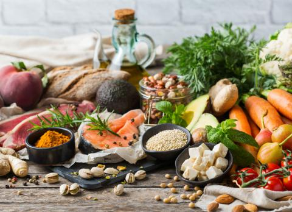
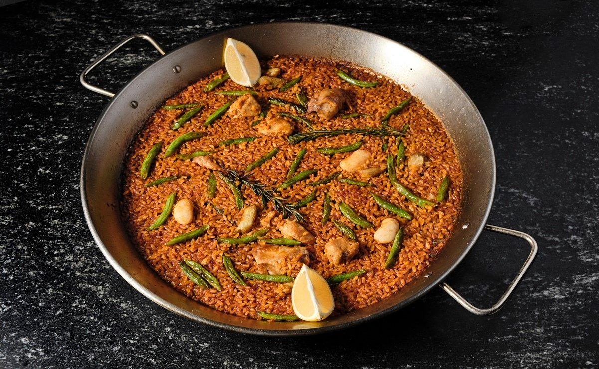

Inicio:
Las mejores ideas gastronomicas mediterranias para mejorar el estilo de vida y probar diferentes culturas.

En esta dieta del mediterranio

La paella es un plato tipico representaivo del medio mediterranio esta lleva ingredientes de la tierra como las alubias y alcachofas, entre otras cosas más.